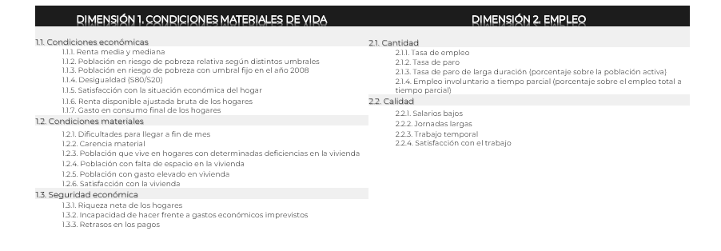
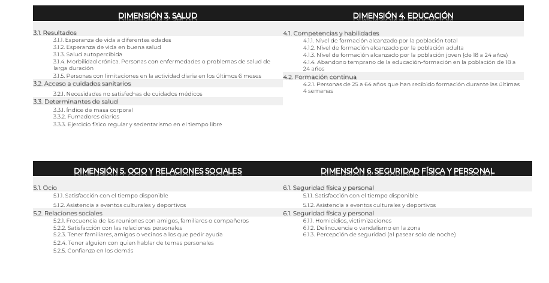
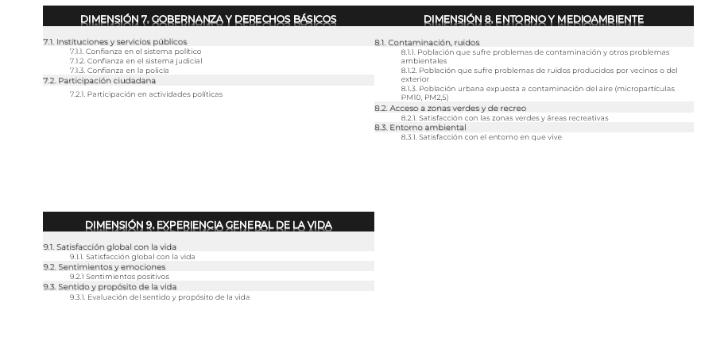

PEC 3 Storytelling Visualización de datos: Jorge Álvarez
Elegir el mejor sitio para vivir no es fácil, debemos tener en cuenta muchos factores, por no hablar que las preferencias de cada persona son diferentes.
¿Cuál es el mejor indicador para comparar la calidad de vida en un lugar?¿El PIB per capita? ¿IDH?
En algunos lugares, el PIB per capita es alto y la gente no esta contenta con su trabajo💻, o no tiene amigos cerca con los que tomar unas cervezas 🍺🍺. Puede qué la naturaleza y los paisajes a tu alrededor sean espectaculares🌼, pero es posible los servicios sanitarios sean de peor calidad. Hay sitios donde tendrás muchas relaciones sociales y buena fiesta, pero te sentirás intranquil@ volviendo a casa🔫. Hay personas que dan más importancia a que las instituciones públicas y sus gobernantes sean eficientes o a lugares donde la educación🏫 de sus hijos sea excelente.
Y a estas alturas te estarás preguntando, todo eso no se puede medir. Te respondemos, pues sí , se puede y te vamos a decir cómo:
Con el Índice Compuesto Mazziota-Pareto Ajustado (AMPI):
Este Indice tomará como referencia el año 2008, 2008=100, y a partir de aquí podremos observar las variaciones para sus diferentes dimensiones, qué veremos en las tablas inferiores. “Las principales características del método Mazziota-Pareto aplicado a fenómenos multidimensionales se basan en la agregación de indicadores que no son sustituibles entre sí, todos de la misma relevancia en el fenómeno analizado y que no se compensan entre ellos (un valor bajo en un indicador no se compensa con un valor alto en otro).” (INE)
¿Y cómo se calcula? ....Mucho texto 😊 ... sí tenéis interés aquí puedes tener más información. Más información.
El indice esta calculado tomando como referencia 9 categorías o dimensiones diferentes. A su vez estas se componen de varias sub-categorías y en ellas, encontramos distintos aspectos o ratios a estudiar.
Todas estas clasificaciones se pueden apreciar detalladamente en las tablas inferiores:



Como cada persona tiene sus preferencias a la hora de elegir el mejor sitio donde vivir, hemos elaborado 9 rankings, uno para cada dimensión, para poder evaluar que Comunidades Autónomas lideran cada categoría y un ranking global que recoge los resultados finales del indice AMPI.
En el gráfico siguiente podemos observar, desde el año 2008 hasta el 2019, la evolución del nivel de vida en España para las distintas categorías.
En el mapa inferior podemos seleccionar la dimensión que queremos estudiar y realizar una comparación visual por Comunidad Autónoma. Ya casi hemos decidido cuál es nuestra CCAA preferida...🎉
Si ya hemos decidido nuestra Comunidad Autónoma podemos ayudarnos de la siguiente visualización para ver sus puntos fuertes y debilidades, si todavía no lo hemos hecho, podemos tomarnos nuestro tiempo estudiando las distintas características de las CCAA.
Ya has elegido la Comunidad Autónoma donde te gustaría vivir… pero nuestro humilde consejo es que te rodees de familia y amigos 👪, al final los más importante es tener cerca a la gente que quieres. Además debes tener en cuenta que este análisis esta realizado hasta el año 2019, ha llovido mucho desde entonces. Seguiremos actualizando los datos...